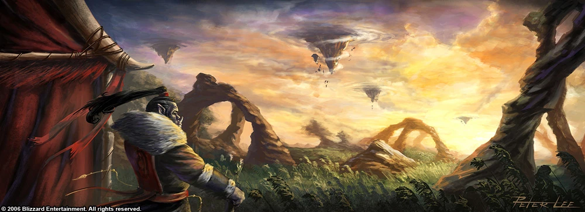

Історія
Орки Дренора жили у благородному шаманістському товаристві, кочуючи племенами зеленими полями Награнда, їх запорошеного світу, понад 5000 років. Вони жили у світі з дренеями та воювали з ограми. Зрештою, присутність дреніїв привела Палаючий Легіон на Дренор. Могутній король демонів Кіл'джеден обманом змусив шановного шамана Нер'зула повірити в те, що дренеї були ворогами орків. Натомість служби Легіону Нер'зул та всі орки отримали сили, необхідні для захоплення нових земель.
Характеристика
Ця раса в основному складається з мускулистих воїнів, добрих мисливців та мудрих шаманів. Зазвичай у них зелений колір шкіри, але він може бути й інших, в основному темних, кольорів. Волосся зазвичай темного кольору. Оркам дуже багато довелося пережити, що зробило їх дуже сильними та витривалими. Орки дуже горда і волелюбна раса, хоча свого часу вони перебували під гнітом демонічного прокляття і являли собою жорстоких і кровожерливих істот. Вони дуже войовничі люди. Якщо є противник, вони ніколи не повертаються спиною до нього.
Окраси
Сіро-зелена шкіра
Коричнева шкіра
Видатні орки
- Чорнорук Руйнівник - вождь клану Чорної Гори та перший вождь об'єднаної Орди.
- Кілрогг Мертве Око - вождь клану Кривавої очниці.
- Дуротан – вождь клану Північних Вовків.
- Громмаш(Гром) Пекельний крик - вождь клану Пісні війни. Першим випив крові демона, а через довгі роки звільнив свій народ від прокляття, заплативши своїм життям.
- Тралл (Го'ель) - вождь клану Північних Вовків, вождь Нової Орди, перший шаман з осквернення народу орків.
- Дрек'тар - старий шаман з клану Північного Вовка, без вождя керує кланом